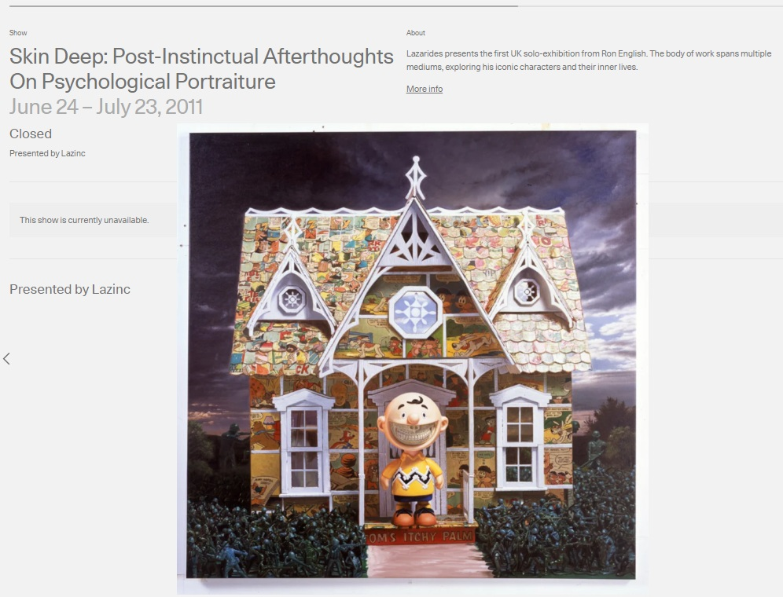

Exhibitions
Skin Deep: Post-Instinctual Afterthoughts on Psychological Portraiture, Lazarides Rathbone, London, United Kingdom, June 24–July 23, 2011.
Literature
Ron English, Fauxlosophy: The Art of Ron English (San Francisco: Last Gasp, 2016), p. 120. ISBN 978-0867196566.
Ron English, Status Factory: The Art of Ron English (San Francisco: Last Gasp of San Francisco, 2014), p. 11. ISBN 978-0867197891.

Ron English, Death and the Eternal Forever (Korero Press, 2014), p. 62. ISBN 978-0957664920.

Ron English, Original Grin: The Art of Ron English (Paris: Cernunnos, 2019), p. 372. ISBN 978-2374950938.

Rom Levy, “Ron English “Skin Deep” New Exhibition Lazarides Gallery, London June 24th”, Street Art News, 2011.

Notes
This work appears on Artsy’s show page for Skin Deep: Post-Instinctual Afterthoughts on Psychological Portraiture, presented by Lazinc.
A reference set assembled by Ron English is retained as supporting documentation for this work.
The work also appears in Arrested Motion’s opening coverage for Ron English’s Skin Deep at Lazarides Gallery, as well as in selected online image posts and articles.
Ancillary Documentation



Selected Online Circulation
Selected online documentation related to this work, its exhibition context, source reference, and later circulation. This list is not exhaustive.